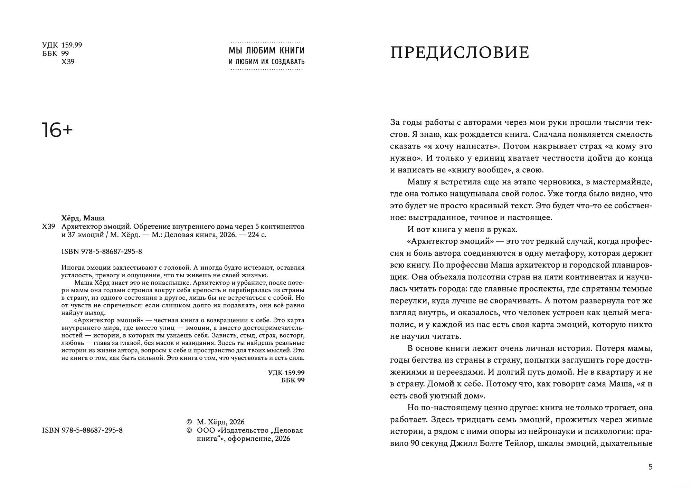
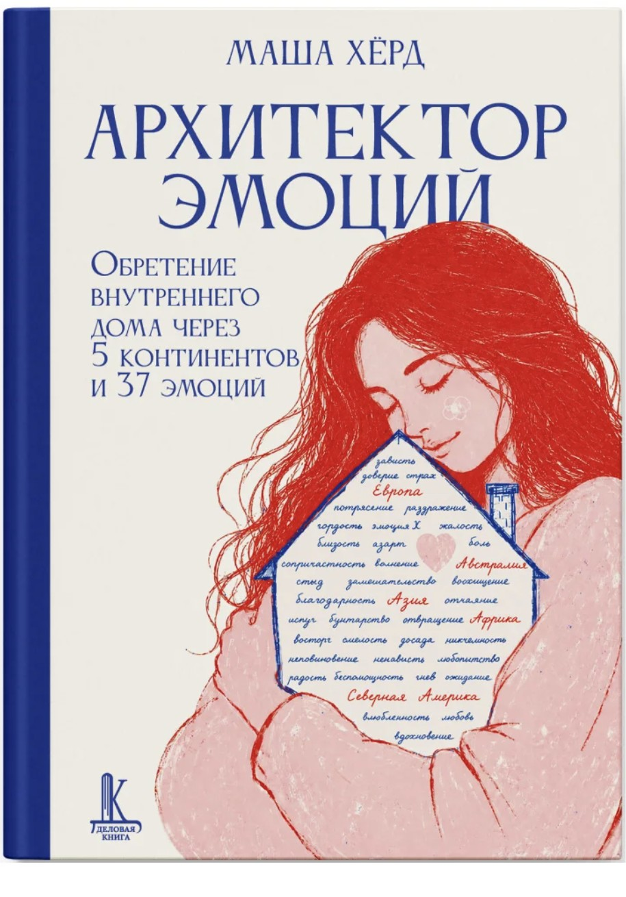
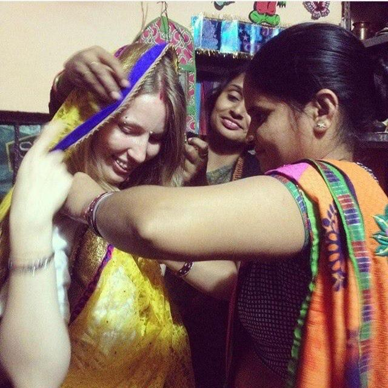
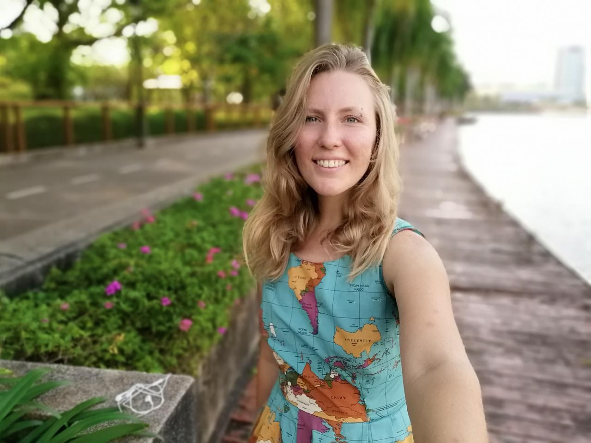
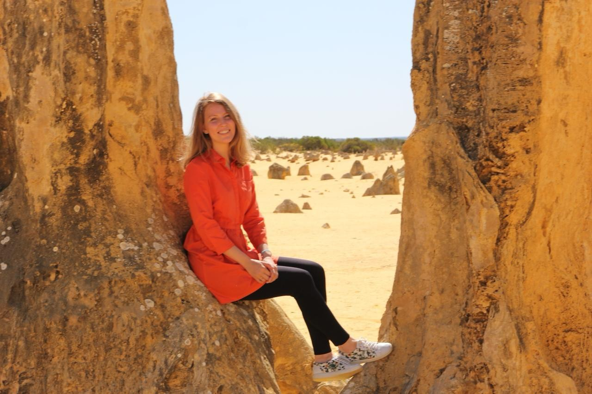
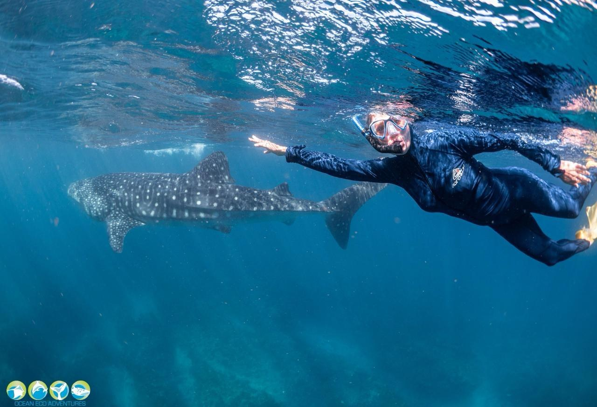
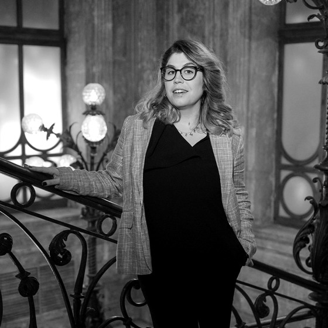
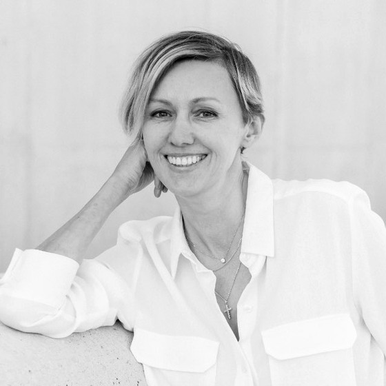

ПредисловиеЛариса Парфентьева о метафоре внутреннего дома и книге, в которой можно узнать свою жизнь.
Для тех, кто привык быть сильной, держать всё на себе, а внутри хочет кричать.
37 личных историй о 37 эмоциях с пяти континентов, вопросы и практики помогут назвать то, что ты чувствуешь, и найти в эмоциях опору, а не повод для стыда.
224 страницытвёрдый переплёт16+ISBN 978-5-88687-295-8«Деловая книга»

А сказать получается только: «я устала», «я злюсь» или «со мной что-то не так».
Книга помогает задержаться рядом со своим состоянием чуть дольше. Сначала услышать его, дать ему имя и понять, о чём оно пытается сказать.
Можно читать подряд. Можно открыть одну главу в метро. Можно через два года снова ответить на вопросы и заметить, как изменились твои слова.
Каждая глава соединяет живую историю и возможность повернуться к собственной. Порядок не обязателен: можно начать с той эмоции, для которой сегодня особенно нужны слова.
Пять континентов, переезды, утраты, любовь, материнство, работа и моменты, о которых обычно не рассказывают гладко.
В конце главы внимание возвращается к тебе: что отозвалось, где это живёт в твоей истории, что хочется заметить.
В книге есть 5–4–3–2–1, дыхательные техники и другие способы вернуть внимание к тому, что происходит сейчас.
Она помогает увидеть свой мир как пространство: с комнатами, закрытыми дверями, привычными дорогами и местами опоры.
«В себя невозможно влюбиться.
Себя можно только полюбить».из книги «Архитектор эмоций»
У книги есть настоящая география. Истории происходили в поездках, городах, пустынях, у воды и под водой. Эти фотографии возвращают им свет, температуру и людей.

Индия
Вдоль воды
Австралия
Под водойФотографии из личного архива Маши Хёрд.
Перед тобой предисловие Ларисы Парфентьевой и первые страницы книги. Не нужно ничего скачивать, регистрироваться или оставлять контакты: листай развороты и смотри, подходит ли тебе мой голос и ритм.
Начни читать. Остальное книга расскажет сама.
«Маша не обещает волшебной таблетки. Она делает кое-что важнее: идет рядом и показывает, что чувствовать можно. Чувствовать — значит, жить».Лариса Парфентьеваавтор бестселлера «100 способов изменить жизнь», специалист по системному семейному консультированию, спикер TEDx · из предисловия
«Это не стандартный нон-фикшн про психологию, это книга про смелость чувствовать. Про то, что эмоции — не враги, а ориентиры. Про то, что дом можно найти в любой стране, если однажды обрести его внутри себя».Даша Аглиуллинаавтор подкаста «Что они скажут» о смелости проявляться и перестать зависеть от чужого мнения

«Путешествовать по своим эмоциям — невероятно интересно, но требует ещё большей смелости. В историях книги переплетаются разные города, страны и эмоции, и каждый читатель заберёт из этого путешествия свой сувенир».Анастасия Ивановаавтор книг Use your Girl Power! и Telegram-канала «Главная Героиня»

«Я открыла почитать несколько страниц и очнулась на трети книги. Это редкое умение — приглашать, а не поучать».Елена Резановаавтор книг «Никогда-нибудь» и «Это норм»
Для этого я собрала бережное сопровождение. Здесь не нужно успевать за марафоном. Ты слушаешь, читаешь, пишешь и постепенно замечаешь, что повторяется в твоём внутреннем мире.
Печатная книга остаётся рядом для заметок. Аудиокнига моим голосом подходит для дороги или дня, когда читать глазами нет сил. Фотографии возвращают историям их географию.
В рабочей тетради каждой главе отведено отдельное место. Так легче заметить повторяющиеся состояния, источники усталости и уже существующие опоры.
Аудиопрактика на 10–15 минут помогает сделать паузу без экрана и заметить тело, мысли и текущее состояние.
Три видеолекции дают способы наблюдать эмоции и внимание в мире информационного шума и перегрузки.
Материалы собраны в закрытом Telegram-пространстве читательниц. К главам и упражнениям можно возвращаться тогда, когда есть ресурс.
Начать можно сразу, не дожидаясь печатной книги. На карте нет обязательного первого шага: выбирай ту форму, на которую сегодня есть силы.
В закреплённом сообщении лежат материалы и понятная навигация.
Не обязательно начинать сначала. Открой состояние, которое отзывается сейчас.
Истории звучат моим голосом, а твои ответы остаются рядом.
10–15 минут без экрана, чтобы вернуть внимание к себе.
Команда уточняет адрес и отправляет книгу. Доставка по России включена.
Zoom, 120 минут. Входит при оплате до начала: 10:00 Мск / 20:00 Auckland.
Можно читать самостоятельно. А можно пройти это путешествие с моим сопровождением. Книга одна и та же, опыт рядом с ней разный.
Книга, материалы для погружения, Telegram-пространство и встреча с Машей 13 декабря при оплате до начала воркшопа.
Если оплата или доставка вызывают вопрос, напиши @mari_zaychik.
37 историй, вопросы и практики для самостоятельного чтения в своём темпе. Выбери магазин и проверь актуальные наличие, цену и доставку на его странице.
Цены и наличие меняются. Сайт магазина покажет условия для твоего города.
Нет. Можно открыть эмоцию, которая отзывается сейчас, прочитать одну главу и остановиться.
Упражнение можно пропустить, книгу закрыть и вернуться позже. Книга и сопровождение не заменяют психологическую или медицинскую помощь.
Печатное издание одно и то же. В сопровождение входят аудиокнига, фотографии, рабочая тетрадь, практика, лекции, Telegram-пространство и доставка книги по России. Воркшоп 13 декабря входит при оплате до его начала: 10:00 Мск / 20:00 Auckland.
Цифровые материалы доступны после подтверждения оплаты. Срок отправки печатной книги команда уточнит при оформлении.
Международная доставка печатной книги не входит в 5 500 ₽ и рассчитывается отдельно. Перед оплатой напиши команде Маши.
Команде Маши в Telegram: @mari_zaychik.
Если тебе хочется не только прочитать мои истории, но и услышать собственную, я буду рядом. Если сейчас нужен только текст, выбери удобный магазин.